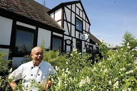

Lunchbuffé 70 kr
Vardagar 11:30 till 15:00 Åtta rätter att välja bland! Sallad och kaffe ingår.
Kyckling
- 85 kr1. Friterad kycklingfilé med sötsur sås
- 85 kr2. Kycklingspett med jordnötssås Indonesisk rätt
- 85 kr3. Kyckling i currysås
- 85 kr4. Kyckling Szechwan med sojabönsås Söt och stark gryta på kinesiskt vis
- 85 kr5. Kyckling med cashewnötter och grönsaker
- 85 kr6. Kyckling med ananas i röd curry och kokosmjölk Thailändsk rätt
- 85 kr7. Tom Ka Gai Kyckling i röd currysås med kokosmjölk och citrongräs
- 125 kr8. Anka Szechwan med sojabönsås Söt och stark gryta på kinesiskt vis
- 125 kr9. Grillad anka med ananasås
Kött
- 95 kr10. Biff med bambuskott och champinjoner
- 95 kr11. Wokad biff med grönsaker, ingefära och ostronsås
- 95 kr12. Biff med currysås
- 95 kr13. Biff a la Szechwan Söt och stark gryta på kinesiskt vis
- 95 kr14. Biff med röd curry och kokosmjölk Thailändsk rätt
- 95 kr15. Biff i Massaman curry Thailändsk curry med jordnötter och kokosmjölk
- 95 kr16. Friterad fläsk med sötsur sås Hong Kong style
Skaldjur
- 125 kr17. Friterade räkor med sötsur sås
- 125 kr18. Wokade räkor med grönsaker, vitlök, ingefära och ostronsås
- 125 kr19. Wokade räkor med kokosmjölk och jordnötssås Thailändsk rätt
- 125 kr20. Wokade räkor i röd currysås och kokosmjölk
Övrigt
- 65 kr21. Wokade grönsaker med vitlök, ingefära och ostronsås
- 75 kr22. Nasi Goreng Stekt ris med kyckling, räkor och ägg på indonesiskt vis
- 75 kr23. Bami Goreng Stekta nudlar med kyckling, räkor och ägg på indonesiskt vis
- 10 kr/st24. Hemlagade vegetariska vårrullar Passar som förrätt
- 30 kr25. Friterade bananer med glass Jättegod efterrätt
Få 10 kr rabatt!
10 kr rabatt för alla rätter vid avhämtning* *Gäller ej rätt 24 och 25
En asiatisk restaurang i Löddeköpinge

Foto: Stefan Persson för Skånskan.se
Kais Gästis, före detta Löddeköpinge Gästgivaregård eller Lödde Gästis, är en nyrenoverad och nystartad asiatisk restaurang i Löddeköpinge. Här erbjuds många populära asiatiska rätter från bland annat Kina, Indonesien och Thailand. Kom in under lunchbuffén för att smaka på mångra rätter till ett mycket förmånligt pris! Kais Gästis erbjuder även takeaway och catering. Har ni några frågor är det bara att ringa på 046 70 94 88.
Artiklar om Kais Gästis